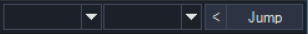

Guides
This Guide Section will explain how most of Grimlite's functionality works. For a detailed explanation of each feature, read their pages from the nav-bar.
User Interface
Description: This part will explain Grimoire's user interface.
Front Screen

Grimlite Rev v.1.3 (14 Sep 2021)
Tool Bar
The Client's features are accessed through here.
Feature side (Left)
About Contains details about grimoire's bot authors, relevant links, and version info.
Bot Open's the Bot Manager window. Main feature. You load and edit bots through here.
Tools Extra tools such as Loader/Grabber, Cosmetic sets, Banker, Plugins, etc..
Packets AQW functions using packets, or basically, command strings. This opens the packet
manager windows.
Options Changes aqw states like lag killer, infinite attack range, skip cutscene. Can be
found in Bots Manager too.
Bank Opens Bank for you. Can reload it if it failed to load.
Plugins Third-Party features that are not part of Grim will appear here. Open Plugin Manager
in tools to load them.
More Opens relevant links to reach the discord server and bot/feature suggestion forms.
Get Bots Opens the portal to download bots.
Quick side (Right)
The Two boxes If you click the arrow pointing left, it'll show the room Cell on the first
box and Pad on the 2nd box. Clicking the dropdown button will also show the Room's list of Cells/Pads.
Pads can be understood as room position (Left, Right, Up, Down, etcc...)
Jump Will move your character to whatever's Cell and Pad is on the boxes. WARNING: Do
not jump carelessly unless you know the exact room position or you're in private. Many people were
BANNED because of cell hopping. DO NOT BE A RETARD.